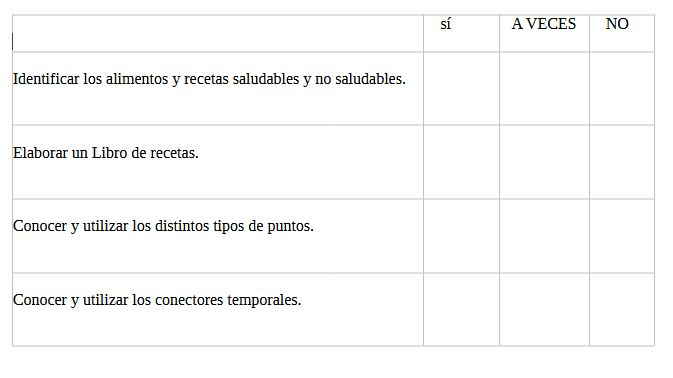

¿Cómo te van a evaluar?
Para comprobar lo que has aprendido, te dejo esta lista.

Como lo has hecho tan bien, te mereces una medalla de chef para reconocer tu esfuerzo y trabajo.
Lectura facilitada
¿Quieres saber lo que has aprendido?
Completa esta lista para saberlo.
![Aparece una tabla con seis apartado, uno para cada objetivo que se había previsto desde el principio. Al lado de cada uno hay un dibujo que apoya la información de la frase. Así, al principio Rétor sale con una zanahoria y un rosco de azúcar, para aclarar que se ha visto la diferencia entre la alimentación saludable y no saludable. Después, sale un dibujo del mundo y un avión de papel indicando que se han visto recetas de otros lugares del mundo. Después, Rétor tiene un libro de recetas de cocina, ya que se ha visto cómo elaborar un recetario. En cuarto lugar, un punto sonriente para recordar que se han visto los tipos de punto. Después sale una flecha con línea discontinua enlazando puntos, indicando los conectores temporales. Finalmente, Rétor lleva una paleta de pintor en la mano, recordando que se ha visto la relación entre la alimentación y recetas de cocina con otras manifestaciones artísticas.](IMG_06_ESCALA_VALORACION.PNG "Escala de valoración")
Por hacerlo tan bien te mereces una medalla de chef.
Esta medalla sirve para reconocer tu esfuerzo y tu trabajo.
¡Aquí la tienes!